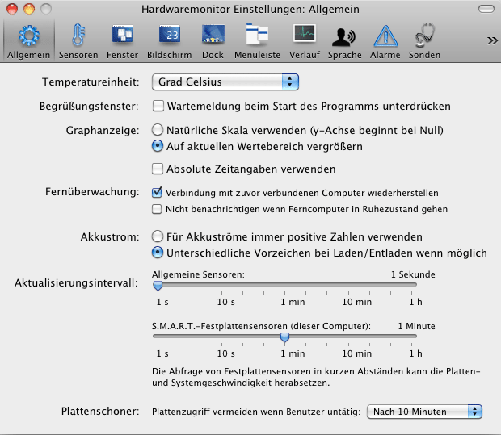

Allgemeine Einstellungen vornehmen |
Um die Arbeitsweise des Programms Ihren persönlichen Vorlieben anpassen zu können, lassen sich zahlreiche Einstellungen und Anpassungen vornehmen. Sie können diese Vorgaben im Hauptmenü unter dem Menüpunkt Einstellungen… erreichen oder indem Sie die Tastenkombination ⌘+, drücken. Die Einstellungen sind in acht Rubriken unterteilt, die in diesem Handbuch später noch ausführlich erläutert werden. Die grundsätzlichen Einstellungen, die unabhängig von dem Computer sind, auf dem Sie das Programm gerade laufen lassen, werden in der Rubrik Allgemein vorgenommen.
Mit dem Klappmenü Temperatureinheit wählen Sie aus, welche Maßeinheit das Programm zur Ausgabe von Temperaturdaten verwenden soll. Sie können wählen zwischen:
Hinweis: Eine Kombination aus mehreren Maßeinheiten wird in der grafischen Darstellung und beim Export von Verlaufswerten nicht unterstützt. In diesem Fall wird die erste Maßeinheit der Kombination verwendet.
Beim Start des Programms muss die Sensorausstattung Ihres Computers ermittelt werden, was je nach den Hardware-Geräten, die Sie verwenden und der Anzahl der zusätzlichen Computer, die Sie fernüberwachen, eine längliche Aufgabe sein kann. Das Programm zeigt einen Wartehinweis in einem kleinen Fenster an, während die notwendigen Vorbereitungen ablaufen. Sobald das Fenster verschwindet, ist das Programm voll betriebsbereit. Falls Sie solche Fenster nicht mögen, können Sie es mit einem Häkchen bei Begrüßungsfenster: Wartemeldung beim Start des Programms unterdrücken abschalten.
Die Einstellung Graphanzeige wählt aus, in welcher Form die Skala für die senkrechte Achse von Verlaufsgrafiken dargestellt werden soll. Die Auswahl Natürliche Skala verwenden lässt die Achse grundsätzlich bei Null beginnen. Die Auswahl Auf aktuellen Wertebereich vergrößern zeigt die Grafik so an, dass der Messbereich, der im Verlauf sichtbar wird, automatisch so vergrößert wird, dass er 90 Prozent der Höhe der Grafik einnimmt. Hierdurch werden kleine Details besser sichtbar, diese Darstellung kann jedoch dazu verleiten, kleine Veränderungen und Messfehler zu überinterpretieren.
Normalerweise werden Zeitwerte auf den horizontalen Achsen der Verlaufsgraphen mit relativen Bezeichnungen wie z.B. "42 Minuten früher" angezeigt. Sie können alternativ absolute Zeitangaben wie "14:42:15" anzeigen lassen, indem Sie die Auswahl Absolute Zeitangaben verwenden ankreuzen.
Zwei Wahlmöglichkeiten sind im Bereich Fernüberwachung verfügbar:
Die Einstellung Akkustrom ist nur für Hardwaremonitor verfügbar. Sie wird in Temperaturmonitor nicht angezeigt. Die Auswahl steuert, welcher Vorgehensweise das Programm folgen soll, wenn Ampère-Werte für Akkueinheiten angezeigt oder aufgezeichnet werden. Einige Versionen von Mac OS X und bestimmte Batterieeinheiten erlauben, dass das Vorzeichen des Stromwertes angibt, ob der Akku gerade geladen oder entladen wird. Ein Strom von 1,5 Ampere wird beispielsweise als 1,5A angezeigt, wenn er vom Akku in den Computer fließt und als -1,5A wenn der gleiche Strom in die entgegengesetzte Richtung vom Computer in den Akku fließt. Drücken Sie den Knopf bei Für Akkuströme immer positive Zahlen verwenden, wenn Sie sicherstellen möchten, dass die Werte immer größer als 0 sind. Treffen Sie die Auswahl Unterschiedliche Vorzeichen bei Laden/Entladen wenn möglich, falls Sie einen Vorzeichenwechsel zulassen möchten. Beachten Sie, dass einige Akkus und ältere Versionen von Mac OS X dies nicht unterstützen können.
Mit den Schiebereglern unter Aktualisierungsintervall können Sie steuern, wie oft das Programm neue Messungen durchführen soll. Dies beeinflusst auch die Darstellung der aktuellen Werte. Die Zeitdauer kann in verschiedenen Stufen zwischen einer Messung pro Sekunde und einer Messung pro Stunde ausgewählt werden. Der empfohlene Wert liegt bei einem Intervall von 2 Sekunden.
Noch einmal hiervon getrennt kann die Abfrage der Festplattensensoren gesteuert werden. Da einige Festplatten kurzzeitig in einen Diagnosemodus gehen und eventuell die Schreib-/Leseköpfe bewegen, wenn die Sensoren abgefragt werden, ist es nicht zu empfehlen, ein zu kurzes Abfrageintervall zu verwenden. Ansonsten kann es passieren, dass durch ständiges Abfragen der Messwerte die Leistung Ihrer Festplatte(n) herabgesetzt wird.
Beachten Sie, dass der Zugriff auf Plattensensoren, die in die Laufwerke selbst eingebaut sind, von den Laufwerken als "Benutzeraktivität" interpretiert wird. Wenn Sie den Ruhezustand für Festplatten in Mac OS X eingeschaltet haben, kann die Überwachung dieser Sensoren dazu führen, dass die Laufwerke nicht mehr wie erwartet in den Ruhezustand gehen. Aus diesem Grund enthält das Programm eine Plattenschoner-Funktion: Sobald Sie inaktiv sind und Ihren Computer für einen gewissen Zeitraum nicht benutzen, kann das Programm automatisch die Sensorkommunikation mit allen Laufwerken stoppen. Hierdurch kann die normale Ruhezustandsfunktion der Festplatten aktiv werden. Setzen Sie das Klappmenü bei Plattenschoner auf das gewünschte Zeitintervall.
Die Plattenschonerfunktion des Programms arbeitet absichtlich unabhängig von Ihren persönlichen Energiespareinstellungen für Mac OS X.

Neben den allgemeinen Einstellungen speichert das Programm automatisch ab, welche Fenstertypen und anderen Ausgabearten Sie zur Darstellung der Messwerte verwenden. Hierin ist auch die Position aller Fenster auf dem Schirm enthalten. Sie brauchen sich um diese Einstellungen nicht zu kümmern. Beim nächsten Start des Programms wird automatisch versucht, wieder exakt den Stand herzustellen, den Sie bei der letzten Benutzung des Programms hatten.
Falls Sie das Monitorprogramm als "roamender Benutzer" auf verschiedenen Computern in einem Netzwerk einsetzen und sich Ihr privater Ordner auf einem gemeinsamen Dateiserver befindet (dies ist die normale Vorgehensweise in großen Firmen und Schulen), ist die Software in der Lage, sich die Einstellungen für jeden von Ihnen benutzten Computer und Computertyp zu merken.
Die Einstellungen in Allgemein und Sensoren gelten global für alle Ihre Computer, alle anderen Präferenzbereiche werden für jeden Computer, zwischen dem Sie wechseln, individuell gespeichert.